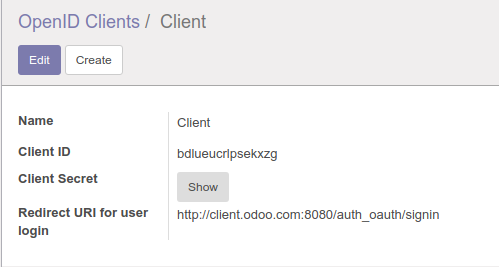
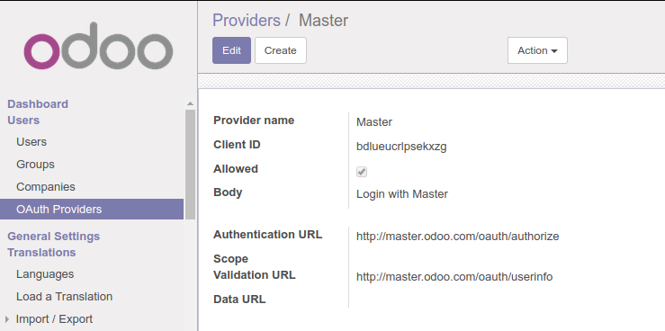
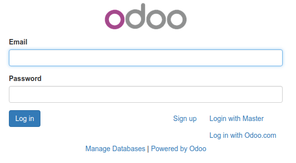
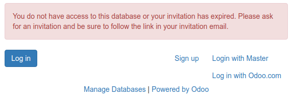

<section class="oe_container">
    <div class="oe_row oe_spaced">
        <div class="oe_span12">
          <h2 class="oe_slogan">Galicea OpenID Connect Provider</h2>
          <h3 class="oe_slogan">
            OpenID Connect Provider for Odoo &amp; OAuth2 resource server
          </h3>
<p>
This add-on allows Odoo to become an OpenID Connect Identity Provider (or just OAuth2 authorization server). The supported use-case is to allow several company-owned applications (possibly other Odoo instances) to reuse identities provided by Odoo, by becoming its OpenID Connect Clients. <i>There is no technical reason not to allow third-party clients, but keep in mind that as is, there is no support for custom scopes (other than <tt>openid</tt>) and no permission is required from the user to share their identity with the client.</i></p>

<p>The add-on also provides OAuth2 token validation for use in custom API endpoints. This allows the clients to securely fetch data from Odoo.</p>

          <h2>Prerequisites</h2>
          <pre>
pip install -r galicea_openid_connect/requirements.txt
</pre>
          <h2>Client configuration</h2>
          <p>
            Simply go to <tt>OpenID Connect Provider</tt> menu to register a new client. Make sure that the <tt>Redirect URI</tt> exactly matches <tt>redirect_uri</tt> parameter your client is going to send. Copy generated <tt>Client ID</tt> and <tt>Client secret</tt> to configure your client.
          </p>
          <p>
            You can use <a href="https://openid.net/specs/openid-connect-discovery-1_0.html">OpenID Connect Discovery</a> to set up your client. The discovery document URL will be located at <tt>&lt;odoo-base-url&gt;/.well-known/openid-configuration</tt> and it looks like this: <pre>
{
    "authorization_endpoint": "&lt;odoo-base-url&gt;/oauth/authorize",
    "grant_types_supported": [
        "authorization_code",
        "implicit"
    ],
    "id_token_signing_alg_values_supported": [
        "RS256"
    ],
    "issuer": "&lt;odoo-base-url&gt;/",
    "jwks_uri": "&lt;odoo-base-url&gt;/oauth/jwks",
    "response_types_supported": [
        "code",
        "token",
        "id_token token",
        "id_token"
    ],
    "scopes_supported": [
        "openid"
    ],
    "subject_types_supported": [
        "public"
    ],
    "token_endpoint": "&lt;odoo-base-url&gt;/oauth/token",
    "token_endpoint_auth_methods_supported": [
        "client_secret_post"
    ],
    "userinfo_endpoint": "&lt;odoo-base-url&gt;/oauth/userinfo"
}
</pre>

          <h3>Configuring other Odoo instance/DB to be the client</h3>
<p>Let's say that you want to allow users registered in your <tt>master.odoo.com</tt> Odoo instance to be able to log into <tt>client.odoo.com</tt> instance, without having to create a separate account.</p>

<p>To do that, simply install this module on <tt>master.odoo.com</tt> and add the client, using <tt>/auth_oauth/signin</tt> as a redirect_uri:</p>


<p>Now, in <tt>client.odoo.com</tt>:
  <ul>
    <li>install the <tt>auth_oauth</tt> add-on,</li>
    <li>enable developer mode,</li>
    <li>make sure that <tt>Allow external users to sign up</tt> option is enabled in <tt>General settings</tt></li>
    <li>add the following OAuth Provider data in the settings:</li>
    
</p>
Now, the users of <tt>client.odoo.com</tt> will be able to login using new <tt>Login with Master</tt> link.

In case they are already logged into <tt>master.odoo.com</tt>, all they need to do is to click it. Otherwise, they will be redirected to <tt>master.odoo.com</tt> to provide their credentials.

<div class="alert alert-danger" role="alert">
  <b>Warning!</b> The user of <tt>master.odoo.com</tt> will not be able to log into <tt>client.odoo.com</tt> if there already is a regular account with the same e-mail address in <tt>client.odoo.com</tt>. In that case you will see this message:
  
</div>


          <h2>Creating JSON APIs with OAuth2 authorization</h2>
          <p>Along with the ID token, it's possible for the OpenID Connect Client to request access token, that can be used to authorize access to a custom JSON API.</p>
          <p>You can create such API in a way that is similar to creating regular Odoo controllers:</p>
<pre>
# -*- coding: utf-8 -*-

from odoo import http
from odoo.addons.galicea_openid_connect.api import resource

class ExternalAPI(http.Controller):
    @resource('/oauth/userinfo', method='GET')
    def userinfo(self, req, **query):
        user = req.env.user
        return {
            'sub': str(user.id),
            'name': user.name,
            'email': user.email
        }
</pre>
(note that this particular endpoint is bundled into <tt>galicea_openid_connect</tt> add-on). The client can then call this endpoint with either a header that looks like <tt>Authorization: Bearer &lt;token&gt;</tt> or <tt>&amp;access_token=&lt;token&gt;</tt> query parameter.
<pre>
$ curl --header 'Authorization: Bearer 9Dkv2W...gzpz' '&lt;odoo-base-url&gt;/oauth/userinfo'

{"email": false, "sub": "1", "name": "Administrator"}
</pre>

<h3>API authorized with client credentials tokens</h3>
It's also possible to create APIs for server-to-server requests from the Client.
<pre>
# -*- coding: utf-8 -*-

from odoo import http
from odoo.addons.galicea_openid_connect.api import resource

class ExternalAPI(http.Controller):
    @resource('/oauth/clientinfo', method='GET'<b>, auth='client'</b>)
    def clientinfo(self, req, **query):
        client = req.env['galicea_openid_connect.client'].browse(req.context['client_id'])
        return {
            'name': client.name
        }
</pre>
(note that this particular endpoint is bundled into <tt>galicea_openid_connect</tt> add-on as well). In order to receive the access token, the client needs to call the <tt>/oauth/token</tt> endpoint with <tt>&amp;grant_type=client_credentials</tt> parameter:
<pre>
$ curl -X POST '&lt;odoo-base-url&gt;/oauth/token?grant_type=client_credentials&client_id=dr...ds&client_secret=DL...gO'

{"access_token": "WWy74uJIIRA4bonJHdVUeY3N8Jn2vuMecIfQntLf5FvCj3C3nNJY9tRER0qcoHRw", "token_type": "bearer"}
</pre>
Such token can then be used to access the resource:
<pre>
$ curl --header 'Authorization: Bearer WWy...coHRw' '&lt;odoo-base-url&gt;/oauth/clientinfo'

{"name": "Test Client"}
</pre>
<h2>Additional notes</h2>
<ul>
  <li>In order to support OpenID Connect features related to authentication time, this also adds time of the user log-in to Odoo session.</li>
  <li>For each client, a special kind of public user ("system user") is created to be impersonated during the server-server API requests.</li>
</ul>
      </div>
    </div>
</section>
